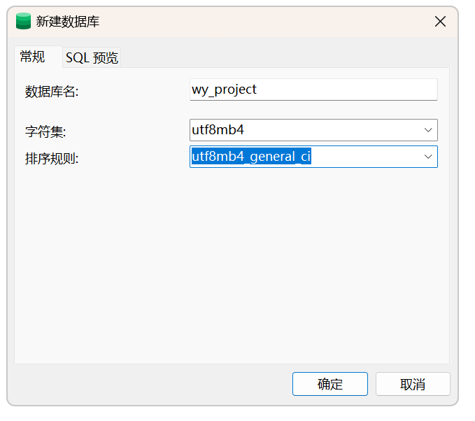
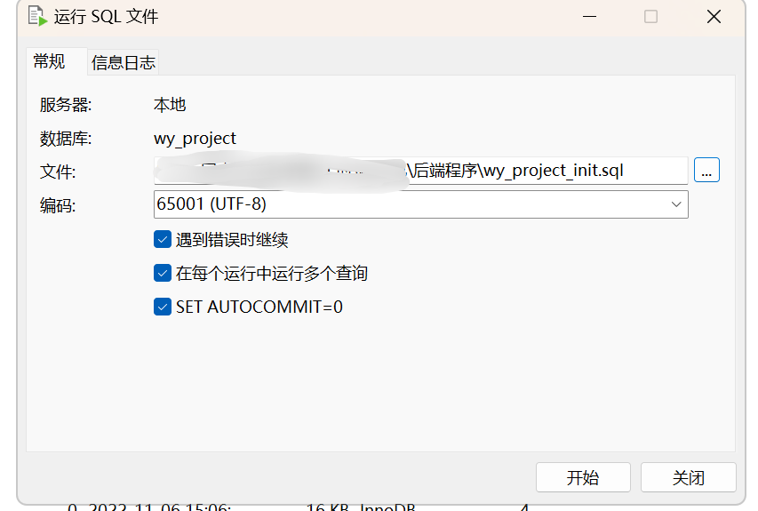
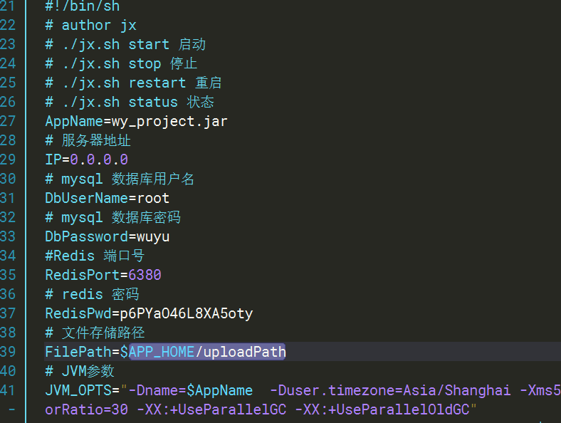
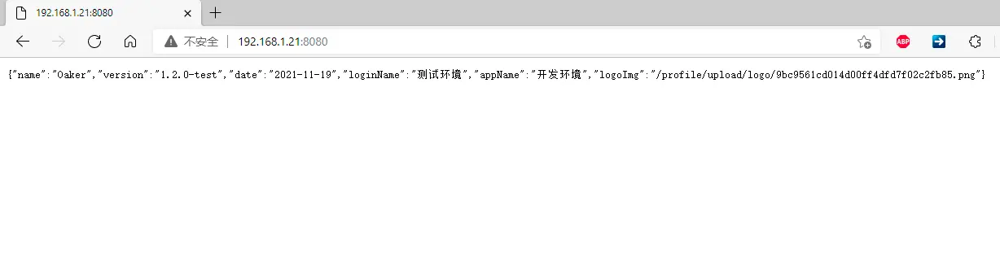

# 安装部署
# 分结构部署
# 0.相关环境准备
相关软件：mysql （或者mariaDB）、redis5.0、nginx。
环境需要：jdk1.8
工具：ssh工具，navicat（或其他数据库工具）
假设已经装好相关mysql，redis、jks和nginx环境了。
# 1.下载后端程序和前端程序
通过下载页面选择下载
直接下载最新版本 下载地址： 工时系统下载 (opens new window)
下载后将程序包上传到服务器上。
# 2. 部署后端
# 2.1.创建数据库
库名：wy_project 。 ( 必须是这个，请不要自行定义库名，0.2版本之后库名为wy_cost，请注意更改）。
字符集：utf8mb4
排序规则：utf8mb4_general_ci

导入sql，使用命令行或者navicat 等工具导入mysql文件中的 wy_project_init 文件到 wy_project 数据库中

# 2.2.部署后端程序
1.创建程序目录
mkdir /usr/local/wysoft
2.移动文件
cp wy_project.jar /usr/local/wysoft/
cp wy_ctl.sh /usr/local/wysoft/
3.进入程序目录，并修改配置信息
主要修改内容：
数据库密码
redis端口号
redis密码
上传文件路径 # 可不修改 默认为当前目录下的uploadPath下
cd /usr/local/wysoft
vi wy_ctl.sh

4.启动
./wy_ctl.sh start
访问localhostL8080 出现这个界面说明后端部署成功。

5.其他管理
#停止
./wy_ctl.sh stop
#重启
./wy_ctl.sh restart
#查看状态和日志
./wy_ctl.sh status
# 3.部署前端
1.解压前端文件
unzip wy_web.zip
如果没有unzip，需要先进行安装.
#centos
yum install unzip
#ubuntu
apt install unzip
2.复制到程序目录
cp -r wy_web /usr/local/wysoft/
3.复制nginx配置文件
将wy_nginx.conf 放到nginx的conf.d 目录下
这里需要的nginx的安装目录
## 安装在 /etc/nginx/下
cp wy_nginx.conf /etc/nginx/conf.d/
## nginx安装在/usr/local/nginx下
cp -r wy_web /usr/local/nginx/conf/conf.d/
# 4.修改配置文件（可选，如有冲突，则需要修改对应端口）
默认是端口是80，主机是localhost，可根据自己需求进行修改。
# 5.重新载入nginx 配置 或者重启nginx。
# 6.访问 localhost
能够出现验证码说明前后端均已部署成功。
# 7.登录访问
使用默认账号登录
默认管理员： admin
密码：12345678
# docker compose
# 一键安装包部署
docker 建议版本23.0.1或以上，可使用docker --version 查看。
compose 建议版本 v2.16.0或以上，可使用docker compose version 查看。
下载代码文件后，地址同上。
//进入install/compose 目录
# cd install/compose
// 设置程序运行权限
sudo chmod +x conf/app/ctl-tools.sh conf/app/start.sh conf/app/wuyu-cost.jar
//方式1.前台启动 用于启动看日志
docker compose up
// 方式2.后台启动，用于日常使用
docker compose up -d
停止/删除服务
//使用方式1 停止服务
shell下 按 ctrl +c 或者直接关掉shell即可。
//使用方式2 停止服务
# docker compose stop
// 删除服务
docker compose down
# 使用docker compose 模板文件部署
使用工程install/docker compose 文件进行部署
# 文件初始化
本文件夹为docker compose 模板文件，运行之前需要放入对应的程序文件。
将后端文件改名为cost_app.jar 放入conf\app 目录下,并设置为可运行程序
将前端文件 放入conf\www目录下.
将数据库脚本改名为init.sql 放入conf\init.d 目录下
最终效果如下： ├─conf │ ├─app │ │ ctl-tools.sh │ │ start.sh │ │ wuyu-cost.jar │ │ │ ├─init.d │ │ init.sql │ │ │ │ └─www │ │ favicon.ico │ │ index.html │ │ robots.txt │ │ template.xlsx │ │ │ ├─html │ │ ie.html │ │ │ └─static
# 运行
# 准备工作
# 进入目录
cd docker-compose
# 设置程序运行权限
# chmod +x conf/app/ctl-tools.sh conf/app/start.sh conf/app/wuyu-cost.jar
chmod +x conf/app/*
# 启动服务
# 方式1.直接启动
docker compose up
# 方式2.后台启动
docker compose up -d
浏览器访问 http://localhost
#
默认管理账号： admin 默认密码： 12345678